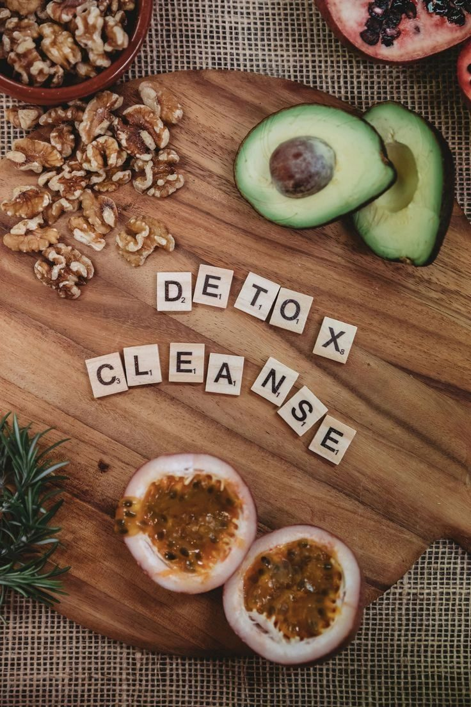

Which One Do You Actually Need? Well, let's take a look at the difference.
If you’ve ever felt confused about the difference between a detox and a cleanse, you’re not alone. These two wellness buzzwords are everywhere — but they aren’t the same thing.
Understanding what each one does (and when your body might need it) can make all the difference in how you feel — from your energy and digestion to your hormones and skin health.
Let’s break down the real difference between a detox and a cleanse, and how a functional medicine approach can help your body naturally reset and thrive.
What Is a Detox?
A detox is your body’s deep clean.
Your liver, kidneys, lymphatic system, lungs, and skin all work together every day to filter out toxins — from food, skincare products, cleaning supplies, the environment, and even chronic stress.
A detox isn’t about starving yourself or drinking nothing but juice — it’s about supporting your body’s natural detoxification pathways so it can eliminate waste and rebalance more effectively.
Functional Medicine Detox Explained
From a functional medicine perspective, detoxification happens in three main phases:
- Phase 1 – Activation: The liver converts toxins into intermediate compounds.
- Phase 2 – Conjugation: These compounds are bound to molecules that make them water-soluble.
- Phase 3 – Elimination: The body flushes them out through bile, urine, sweat, and stool.
When these detox phases get backed up — because of nutrient deficiencies, sluggish digestion, poor sleep, or chronic stress — toxins can recirculate in your system.
That’s when you may start to notice symptoms like:
- Fatigue or brain fog
- Bloating or constipation
- Breakouts or dull skin
- Hormonal imbalance or PMS
- Weight that won’t budge
A functional medicine detox program helps your liver and gut do their job more efficiently by providing the right nutrients and removing what slows them down — safely and gently.
What Is a Cleanse?
A cleanse is more of a digestive reset.
Instead of focusing on liver detoxification, a cleanse helps give your digestive system a break by removing inflammatory foods and emphasizing clean, whole nutrition.
You might remove processed foods, sugar, caffeine, alcohol, or gluten while focusing on fiber-rich vegetables, fruits, lean proteins, and plenty of water.
Benefits of a Natural Body Cleanse
- Reduces inflammation
- Improves digestion and regularity
- Balances cravings
- Supports healthy weight management
- Restores gut balance and energy
Cleanses often last anywhere from 3 to 10 days and can be a great way to help your body reset before starting a deeper detox.
Detox vs. Cleanse: How to Know Which You Need...
You Might Need a Detox If:
- You feel tired, foggy, or unmotivated
- You struggle with hormonal acne or PMS
- You’re constipated or have irregular digestion
- You have stubborn weight or fluid retention
You Might Need a Cleanse If:
- You’ve been eating more processed or sugary foods
- You just returned from travel or holidays
- You feel bloated or heavy after meals
- You want to curb cravings and reset your taste buds
Often, these two approaches work beautifully together — starting with a gentle cleanse to prepare your body, followed by a detox to support deeper elimination and cellular repair.
The Functional Medicine Approach to Detoxification
In functional medicine, detoxing is about supporting the systems that detoxify for you — not forcing your body to do something extreme.
Your liver, gut, and lymphatic system are the key players here. When they’re nourished and supported, your body can naturally eliminate toxins, balance hormones, and boost metabolism.
Here are a few of my favorite functional detox support strategies:
- Eat cruciferous vegetables like broccoli, kale, and Brussels sprouts for liver enzymes.
- Stay hydrated and add electrolytes to flush out waste.
- Prioritize daily movement or dry brushing to support lymph flow.
- Eat enough fiber (especially flax and chia seeds) to bind and remove toxins.
- Use clean, non-toxic skincare and cleaning products to reduce toxic load.
- The Dr. Cabral Functional Medicine Detox Kit
Remember — your body wants to detox. It simply requires the right environment and tools to excel.
The Bottom Line: Cleanse, Detox, or Both?
So, what’s the difference between a detox and a cleanse?
- A cleanse helps lighten your body’s load and reset your digestion.
- A detox helps remove toxins on a deeper, cellular level.
Both are powerful tools for restoring balance, improving energy, and supporting hormonal and gut health.
If you’ve been feeling sluggish, bloated, or just not like yourself, it might be time to give your body the support it’s asking for — naturally and intentionally.
Ready to Feel Your Best Again?
If you’re ready to experience the benefits of a guided functional medicine detox, I’d be delighted to invite you to join my next Detox Program.
You’ll get:
- A step-by-step plan designed to reset your digestion and hormones
- Practitioner guidance and community support
- Simple, nourishing meals that work with your body — not against it
Learn more and join the next Detox: Join The Facebook Group!
Your body knows how to heal — it just needs the right support to thrive.